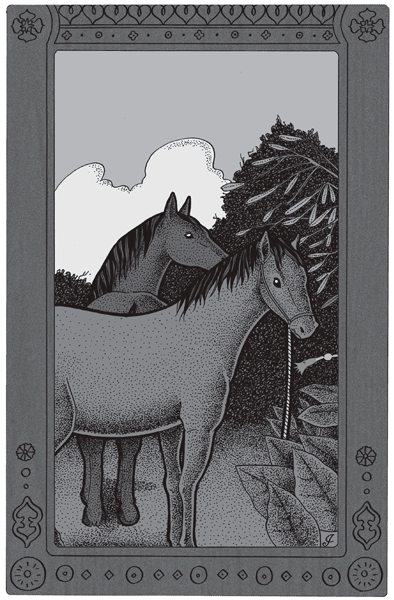
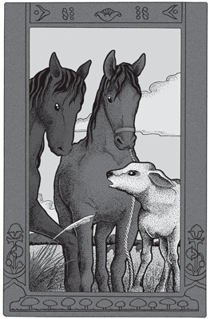
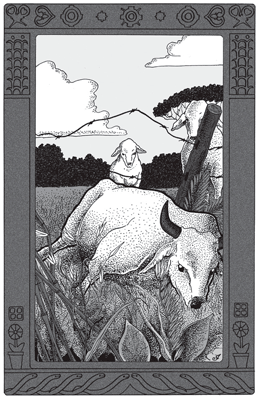
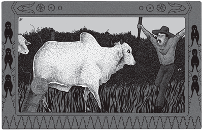
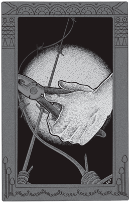

Durante quince días el alazán había buscado en vano la senda por donde su compañero se escapaba del potrero. El formidable cerco, de capuera –desmontante que ha rebrotado inextricable–, no permitía paso ni aun a la cabeza del caballo. Evidentemente no era por donde el malacara pasaba.
El alazán recorría otra vez la chacra trotando inquieto con la cabeza alerta. De la profundidad del monte, el malacara respondía a los relinchos vibrantes de su compañero, con los suyos cortos y rápidos, en que había, sin duda, una fraternal promesa de abundante comida. Lo más irritante para el alazán era que el malacara reaparecía dos o tres veces en el día para beber. Prometíase aquél entonces no abandonar un instante a su compañero y durante algunas horas, en efecto, la pareja pastaba en admirable conserva. Pero de pronto el malacara, con su soga a rastra, se internaba en el chircal, y cuando el alazán, al darse cuenta de su soledad, se lanzaba en su persecución, hallaba el monte inextricable. Esto sí, de adentro, muy cerca aún el maligno malacara respondía a sus desesperados relinchos con un relinchillo a boca llena.
Hasta que esa mañana el viejo alazán halló la brecha muy sencillamente: cruzando por frente al chircal, que desde el monte avanzaba cincuenta metros en el campo, vio un vago sendero que lo condujo en perfecta línea oblicua al monte. Allí estaba el malacara, deshojando árboles.
La cosa era muy simple: el malacara, cruzando un día el chircal, había hallado la brecha abierta en el monte por un incienso desarraigado. Repitió su avance a través del chircal, hasta llegar a conocer perfectamente la entrada del túnel. Entonces usó del viejo camino que con el alazán había formado a lo largo de la línea del monte. Y aquí estaba la causa del trastorno del alazán: la entrada de la senda formaba una línea sumamente oblicua con el camino de los caballos, de modo que el alazán, acostumbrado a recorrer éste de Sur a Norte, y jamás de Norte a Sur, no hubiera hallado jamás la brecha.
|
 |
|
En un instante el viejo caballo estuvo unido a su compañero. |
En un instante el viejo caballo estuvo unido a su compañero, y juntos entonces, sin más preocupación que la de despuntar torpemente las palmeras jóvenes, los dos caballos decidieron alejarse del malhadado potrero que ya sabían de memoria.
El monte, sumamente raleado, permitía un fácil avance aun a los caballos. Del bosque no quedaba en verdad sino una franja de doscientos metros de ancho. Tras él, una capuera de dos años se empenachaba de tabaco salvaje. El viejo alazán, que en su juventud había correteado capueras hasta vivir perdido seis meses en ellas, dirigió la marcha, y en media hora los tabacos inmediatos quedaron desnudos de hojas hasta donde alcanza un pescuezo de caballo.
Caminando, comiendo, curioseando, el alazán y el malacara cruzaron la capuera hasta que un alambrado los detuvo.
–Un alambrado –dijo el alazán.
–Sí, un alambrado –sintió el malacara. Y ambos, pasando la cabeza sobre el hilo superior, contemplaron atentamente. Desde allí se veía un alto pastizal de viejo rozado, blanco por la helada; un bananal y una plantación nueva. Todo ello poco tentador, sin duda, pero los caballos entendían ver eso, y uno tras otro siguieron el alambrado a la derecha.
Dos minutos después pasaban: un árbol, seco en pie por el fuego, había caído sobre los hilos. Atravesaron la blancura del pasto helado, en que sus pasos no sonaban, y bordeado el rojizo bananal, quemado por la escarcha, vieron de cerca qué eran aquellas plantas nuevas.
–Es yerba –constató el malacara, con sus trémulos labios a medio centímetro de las duras hojas.
La decepción pudo haber sido grande; mas los caballos, si bien golosos, aspiraban sobre todo a pastar. De modo que, cortando oblicuamente el yerbal, prosiguieron su camino, hasta que un nuevo alambrado contuvo a la pareja. Costeáronlo con tranquilidad grave y paciente, llegando así a una tranquera, abierta para su dicha, y los paseantes se vieron de repente en pleno camino real.
Ahora bien, para los caballos, aquello que acababan de hacer tenía todo el aspecto de una proeza. Del potrero aburridor a la libertad presente había infinita distancia. Mas, por infinita que fuera, los caballos pretendían prolongarla aún, y así, después de observar con perezosa atención los alrededores, quitáronse mutuamente la caspa del pescuezo y en mansa felicidad prosiguieron su aventura.
El día, en verdad, la favorecía. La bruma matinal de Misiones acababa por disiparse del todo, y bajo el cielo, súbitamente azul, el paisaje brillaba de esplendorosa claridad. Desde la loma cuya cumbre ocupaban en ese momento los dos caballos, el camino de tierra colorada cortaba el pasto delante de ellos con precisión admirable, descendía al valle blanco de espartillo helado, para tornar a subir hasta el monte lejano. El viento, muy frío, cristalizaba aún más la claridad de la mañana de oro, y los caballos, que sentían de frente el sol, casi horizontal todavía, entrecerraban los ojos al dichoso deslumbramiento.
Seguían así solos y gloriosos de libertad, en el camino encendido de luz, hasta que al doblar una punta de montes vieron a orillas del camino cierta extensión de un verde inusitado. ¿Pasto? Sin duda. Mas en pleno invierno.
Y con las narices dilatadas de gula, los caballos se acercaron al alambrado. ¡Sí, pasto fino, pasto admirable! ¡Y entrarían, ellos, los caballos libres!
Hay que advertir que el alazán y el malacara poseían desde esa madrugada alta idea de sí mismos. Ni tranquera, ni alambrado, ni monte, ni desmonte, nada era para ellos obstáculo. Habían visto cosas extraordinarias, salvado dificultades no creíbles y se sentían gordos, orgullosos y facultados para tomar la decisión más estrafalaria que ocurrírseles pudiera.
En este estado de énfasis, vieron a cien metros de ellos varias vacas detenidas a orillas del camino, y encaminándose allá llegaron a la tranquera, cerrada con cinco robustos palos. Las vacas estaban inmóviles, mirando fijamente el verde paraíso inalcanzable.
 |
¿Por qué no entran? |
–¿Por qué no entran? –preguntó el alazán a las vacas.
–Porque no se puede –le respondieron.
–Nosotros pasamos por todas partes –afirmó el alazán altivo–. Desde hace un mes pasamos por todas partes.
Con el fulgor de su aventura los caballos habían perdido sinceramente el sentido del tiempo. Las vacas no se dignaron siquiera mirar a los intrusos.
–Los caballos no pueden –dijo una vaquillona movediza–. Dicen eso y no pasan por ninguna parte. Nosotras sí pasamos por todas partes.
–Tienen soga –añadió una vieja madre sin volver la cabeza.
–¡Yo no, yo no tengo soga! –respondió vivamente el alazán–. Yo vivía en las capueras y pasaba.
–¡Sí, detrás de nosotras! Nosotras pasamos y ustedes no pueden.
La vaquillona movediza intervino de nuevo:
–El patrón dijo el otro día: “A los caballos, con un solo hilo se los contiene”. ¿Y entonces?… ¿Ustedes no pasan?
–No, no pasamos –repuso sencillamente el malacara, convencido por la evidencia.
–¡Nosotras, sí!
Al honrado malacara, sin embargo, se le ocurrió de pronto que las vacas, atrevidas y astutas, impertinentes invasoras de chacras y del Código Rural, tampoco pasaban la tranquera.
–Esta tranquera es mala –objetó la vieja madre–. ¡Él sí! Corre los palos con los cuernos.
–¿Quién? –preguntó el alazán. Todas las vacas volvieron a él la cabeza con sorpresa.–¡El toro Barigüí! Él puede más que los alambradas malos. –¿Alambrados?… ¿Pasa? –¡Todo! Alambre de púa también. Nosotras pasamos después. Los dos caballos, vueltos ya a su pacífica condición de animales a los que un solo hilo contiene, se sintieron ingenuamente deslumbrados por aquel héroe capaz de afrontar el alambre de púa, la cosa más terrible que puede hallar el deseo de pasar adelante.
 |
El toro pasó los cuernos bajo el alambre de púa […] |
De pronto las vacas se removieron mansamente: a lento paso llegaba el toro. Y ante aquella chata y obstinada frente dirigida en tranquila recta a la tranquera, los caballos comprendieron humildemente su inferioridad.
Las vacas se apartaron, y Barigüí, pasando el testuz bajo una tranca, intentó hacerla correr a un lado.
Los caballos levantaron las orejas, admirados, pero la tranca no corrió. Una tras otra, el toro probó sin resultado su esfuerzo inteligente: el chacarero, dueño feliz de la plantación de avena, había asegurado la tarde anterior los palos con cuñas.
El toro no intentó más. Volviéndose con pereza olfateó a lo lejos entrecerrando los ojos, y costeó luego el alambrado, con ahogados mugidos sibilantes.
Desde la tranquera, los caballos y las vacas miraban. En determinado lugar el toro pasó los cuernos bajo el alambre de púa tendiéndolo violentamente hacia arriba con el testuz, y la enorme bestia pasó arqueando el lomo. En cuatro pasos más estuvo entre la avena, y las vacas se encaminaron entonces allá, intentando a su vez pasar. Pero a las vacas falta evidentemente la decisión masculina de permitir en la piel sangrientos rasguños, y apenas introducían el cuello lo retiraban presto con mareante cabeceo.
Los caballos miraban siempre.
–No pasan –observó el malacara.
–El toro pasó –observó el alazán–. Come mucho.
Y la pareja se dirigía a su vez a costear el alambrado, por la fuerza de la costumbre, cuando un mugido, claro y berreante ahora, llegó hasta ellos: dentro del avenal, el toro, con cabriolas de falso ataque, bramaba ante el chacarero, que con un palo trataba de alcanzarlo.
 |
Bramaba ante el chacarero, |
–¡Añá!… Te voy a dar saltitos… –gritaba el hombre. Barigüí, siempre danzando y berreando ante el hombre, esquivaba los golpes. Maniobraron así cincuenta metros, hasta que el chacarero pudo forzar a la bestia contra el alambrado. Pero ésta, con la decisión pesada y bruta de su fuerza, hundió la cabeza entre los hilos y pasó, bajo un agudo violineo de alambre y de grampas lanzadas a veinte metros.
Como los caballos marchaban débilmente a pocos pasos delante del hombre, pudieron llegar juntos a la chacra del dueño del toro, siéndoles dado así oír la conversación.
Es evidente, por lo que de ello se desprende, que el hombre había sufrido lo indecible con el toro del polaco. Plantaciones, por inaccesibles que hubieran estado dentro del monte; alambradas, por grandes que fuera su tensión e infinito el número de hilos, todo lo arrolló el toro con sus hábitos de pillaje. Se deduce también que los vecinos estaban hartos de la bestia y de su dueño por los incesantes destrozos de aquélla. Pero como los pobladores de la región difícilmente denuncian al Juzgado de Paz perjuicios de animales, por duros que les sean, el toro proseguía comiendo en todas partes menos en la chacra de su dueño, el cual, por otro lado, parecía divertirse mucho con esto.
De este modo los caballos vieron y oyeron al irritado chacarero y al polaco cazurro.
–¡Es la última vez, don Zaninski, que vengo a verlo por su toro! Acaba de pisotearme toda la avena. ¡Ya no se puede más!
El polaco, alto y de ojillos azules, hablaba con agudo y meloso falsete.
–¡Ah, toro malo! ¡Mí no puede! ¡Mí ata, escapa! ¡Vaca tiene culpa! ¡Toro sigue vaca!
–¡Yo no tengo vacas, usted bien sabe!
–¡No, no! ¡Vaca Ramírez! ¡Mí queda loco toro!
–Y lo peor es que afloja todos los hilos, usted lo sabe también.
–¡Sí, sí, alambre! ¡Ah, mí no sabe!…
–¡Bueno!, vea, don Zaninski; yo no quiero cuestiones con vecinos; pero tenga por última vez cuidado con su toro para que no entre por el alambrado del fondo; en el camino voy a poner alambre nuevo.
–¡Toro pasa por camino! ¡No fondo!
–Es que ahora no va a pasar por el camino.
–¡Pasa todo! ¡No púa, no nada! ¡Pasa todo!
–No va a pasar.
Los caballos vieron cómo el hombre volvía precipitadamente a su rancho y tornaba a salir con el rostro pálido. Vieron también que saltaba el alambrado y se encaminaba en dirección a ellos, por lo cual los compañeros, ante aquel paso que avanzaba decidido, retrocedieron por el camino en dirección a su chacra.
–¿Qué pone?
 |
–¿Qué pone? |
–Alambre de púa…; pero no va a pasar.
–¡No hace nada púa!
–Bueno; haga lo posible porque no entre, porque si pasa se va a lastimar.
El chacarero se fue. Es evidente que el maligno polaco, riéndose una vez más de las gracias del animal, compadeció, si cabe en lo posible, a su vecino que iba a construir un alambrado infranqueable para su toro. Seguramente se frotó las manos.
–Mí no podrán decir nada esta vez sí toro come toda avena.
Los caballos reemprendieron de nuevo el camino que los alejaba de su chacra, y un rato después llegaban al lugar en que Barigüí había cumplido su hazaña. La bestia, allí siempre, inmóvil en medio del camino, mirando con solemne vaciedad de idea, desde hacía un cuarto de hora, un punto fijo a la distancia. Detrás de él las vacas dormitaban al sol, ya caliente, rumiando.
Pero cuando los pobres caballos pasaron por el camino, ellas abrieron los ojos despreciativas:
–Son los caballos. Querían pasar el alambrado. Y tienen soga. ¡Barigüí sí pasó!
–A los caballos un solo hilo los contiene. Son flacos.
Esto pareció herir en lo vivo al alazán, que volvió la cabeza:
–Nosotros no estamos flacos. Ustedes sí están. No va a pasar más aquí –añadió, señalando los alambres caídos, obra de Barigüí.–¡Barigüí pasa siempre! Después pasamos nosotras. ¡Ustedes no pasan!
–No va a pasar más. Lo dijo el hombre.
–Él comió la avena del hombre. Nosotras pasamos después.
El caballo, por mayor intimidad de trato, es sensiblemente más afecto al hombre que la vaca. De aquí que el malacara y el alazán tuvieran fe en el alambrado que iba a construir el hombre.
La pareja prosiguió su camino, y momentos después, ante el campo libre que se abría ante ellos, los dos caballos bajaban la cabeza a comer, olvidándose de las vacas.
Tarde ya, cuando el sol acababa de entrar, los dos caballos se acordaron del maíz y emprendieron el regreso. Vieron en el camino al chacarero, que cambiaba todos los postes del alambrado, y a un hombre rubio que, detenido a su lado a caballo, lo miraba trabajar.
–Le digo que va a pasar –decía el pasajero.
–No pasará dos veces –replicaba el chacarero.
–¡Usted verá! ¡Esto es un juego para el maldito toro del polaco! ¡Va a pasar!
–No pasará dos veces –repetía obstinadamente el otro.
Los caballos siguieron, oyendo aún palabras cortadas:
–…reír!
–…veremos.
Dos minutos más tarde el hombre rubio pasaba a su lado a trote inglés. El malacara y el alazán, algo sorprendidos de aquel paso que no conocían, miraron perderse en el valle al hombre presuroso.
–¡Curioso! –observó el malacara después de largo rato. El caballo va al trote y el hombre al galope.
Prosiguieron. Ocupaban en ese momento la cima de la loma, como esa mañana. Sobre el frío cielo crepuscular sus siluetas se destacaban en negro, en masa y cabizbaja pareja, el malacara delante, el alazán detrás. La atmósfera, ofuscada durante el día por la excesiva luz del sol, adquiría a esa semisombra una transparencia casi fúnebre. El viento había cesado por completo, y con la calma del atardecer, en que el termómetro comenzaba a caer velozmente, el valle helado expandía su penetrante humedad, que se condensaba en rastreante neblina en el fondo sombrío de las vertientes. Revivía en la tierra ya enfriada el invernal olor de pasto quemado; y cuando el camino costeaba el monte, el ambiente, que se sentía de golpe más frío y húmedo, se tornaba excesivamente pesado de perfume y de azahar.
Los caballos entraron por el portón de su chacra, pues el muchacho, que hacía sonar el cajoncillo de maíz, había oído su ansioso trémulo. El caballo alazán obtuvo el honor de que se le atribuyera la iniciativa de la aventura, viéndose gratificado con una soga, a efectos de lo que pudiera pasar.
Pero a la mañana siguiente, bastante tarde ya a causa de la densa neblina, los caballos repitieron su escapatoria, atravesando otra vez el tabacal salvaje, hollando con mudos pasos el pastizal helado, salvando la tranquera, abierta aún.
La mañana encendida de sol, muy alto ya, reverberaba de luz, y el calor excesivo prometía para muy pronto cambio de tiempo. Después de trasponer la loma, los caballos vieron de pronto a las vacas detenidas en el camino, y el recuerdo de la tarde anterior excitó sus orejas y su paso; querían ver cómo era el nuevo alambrado.
Pero su decepción, al llegar, fue grande. En los nuevos postes –oscuros y torcidos– había dos simples alambres de púa, gruesos tal vez, pero únicamente dos.
No obstante su mezquina audacia, la vida constante en chacras de montes había dado a los caballos cierta experiencia en cercados. Observaron atentamente aquellos, especialmente los postes.
–Son de madera de ley –observó el malacara.
–Sí, cernes quemados –comprobó el alazán.
Y tras otra larga mirada de examen, el malacara añadió:
–El hilo pasa por el medio, no hay grampas.
–Están muy cerca uno de otro.
Cerca, los postes, sí, indudablemente; tres metros. Pero en cambio, aquellos dos modestos alambres en reemplazo de los cinco hilos del cerco anterior desilusionaron a los caballos. ¿Cómo era posible que el hombre creyera que aquel alambrado para terneros iba a contener al terrible toro?
–El hombre dijo que no iba a pasar –se atrevía sin embargo, el malacara, que, en razón de ser el favorito de su amo, comía más maíz; por lo cual sentíase más creyente.
Pero las vacas lo habían oído.
–Son los caballos. Los dos tienen soga. Ellos no pasan. Barigüí pasó ya.
–¿Pasó? ¿Por aquí? –preguntó descorazonado el malacara.
–Por el fondo. Por aquí pasa también. Comió avena.
Entre tanto la vaquillona locuaz había pretendido pasar los cuernos entre los hilos; y una vibración aguda, seguida de un seco golpe en los cuernos, dejó en suspenso a los caballos.
–Los alambres están muy estirados –dijo el alazán después de un largo examen.
–Sí. Más estirados no se puede… –y ambos, sin apartar los ojos de los hilos, pensaban confusamente en cómo se podría pasar entre los dos hilos.
Las vacas, mientras tanto, se animaban unas a otras.
–Él pasó ayer. Pasa el alambre de púa. Nosotras después.
–Ayer no pasaron. Las vacas dicen sí, y no pasan –comprobó el alazán.
–¡Aquí hay púa, y Barigüí pasa! ¡Allí viene!
Costeando por dentro del monte del fondo, a doscientos metros aún, el toro avanzaba hacia el avenal. Las vacas se colocaron todas de frente al cercado, siguiendo atentas con los ojos a la bestia invasora. Los caballos, inmóviles, alzaron las orejas.
–¡Come toda la avena! ¡Después pasa!
–Los hilos están muy estirados… –observó aún el malacara, tratando siempre de precisar lo que sucedería si…
–¡Comió la avena! ¡El hombre viene! ¡Viene el hombre! –lanzó la vaquillona locuaz.
En efecto, el hombre acababa de salir del rancho y avanzaba hacia el toro. Traía el palo en la mano, pero no parecía iracundo; estaba, sí, muy serio y con el ceño contraído.
El animal esperó a que el hombre llegara frente a él y entonces dio principio a los mugidos con bravatas de cornadas. El hombre avanzó más, el toro comenzó a retroceder, berreando siempre y arrasando la avena con sus bestiales cabriolas. Hasta que, a diez metros ya del camino, volvió grupas en un postrer mugido de desafío burlón, y se lanzó sobre el alambrado.
–¡Viene Barigüí! ¡Pasa todo! ¡Pasa alambre de púa! –alcanzaron a clamar las vacas.
Con el impulso de su pesado trote, el enorme toro bajó la cabeza y hundió los cuernos entre los hilos. Se oyó un agudo gemido de alambre, un estridente chirrido se propagó de poste a poste hasta el fondo, y el toro pasó.
Pero de su lomo y de su vientre, profundamente abiertos, canalizados desde el pecho a la grupa, llovían ríos de sangre. La bestia, presa de estupor, quedó un instante atónita y temblando. Se alejó en seguida al paso, inundando el pasto de sangre, hasta que a los veinte metros se echó, con un ronco suspiro.
A mediodía el polaco fue a buscar a su toro, y lloró en falsete ante el chacarero impasible. El animal se había levantado y podía caminar. Pero su dueño, comprendiendo que le costaría mucho trabajo curarlo –si esto aún era posible–, lo carneó esa tarde. Y al día siguiente le tocó en suerte al malacara llevar a su casa, en la maleta, dos kilos de carne del toro muerto.
Tomado de Cuentos de amor, locura y de muerte (1917)